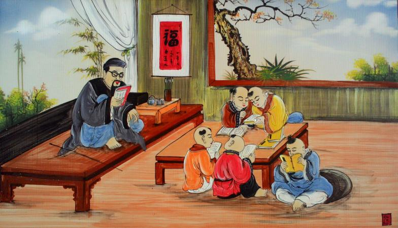

Bò và gà tây
Một con gà tây tán gẫu với con bò: “Mình cực kì yêu thích leo lên ngọn của cái cây kia, nhưng lại không có đủ sức (gà tây thở dài). Con bò góp ý: “Vậy bạn thử ăn chất thải của mình coi sao? Chúng chứa rất nhiều dưỡng chất đấy!”. Gà tây gặm một miếng phân bò và đúng thật là nó cung cấp cho chú nhiều dưỡng chất đủ để leo lên nhánh thấp nhất của cái cây đấy. Ngày tiếp theo, sau khi thưởng thức thêm phân bò, gà tây leo lên được nhánh thứ 2. Cuối cùng sau bốn đêm leo trèo, gà tây đã chễm chệ ngồi trên ngọn cây cao nhất. Tuy nhiên chưa tận hưởng được niềm vui chiến thắng bao lâu, gà tây đã bị bắn chết bởi người nông dân khi ông phát hiện ra nó lấp ló ở ngọn cây.
tình cờ gặp lại nhau

Một chiều mưa đầy, nghe bài tình cờ gặp lại nhau của ca sĩ Thái Châu, lại nhớ về người, dù cuộc gặp gỡ năm trước không phải tình cờ... *** - Em mà bỏ anh, anh sẽ đi tu - Trời trời, gì vậy cha nội, tưởng chỉ bà Lan bã mới đi tu, ông là đàn ông sao nói ghê vậy cha. Phạt cái tội nói bậy phải cõng em xuống núi. Nói chơi vậy mà anh cúi xuống cõng thiệt , mặc cho em đấm vào lưng anh thình thịch vì sợ té, đường hẹp, dốc sỏi và tối, trăng khuyết trên đỉnh trời không đủ sáng bước chân anh.Đó cũng là lần đầu tiên và lần cuối cùng em đi chùa với anh, dù rằng trước Đức Phật anh đã cầu mong em và anh mãi mãi bên nhau. Nha Trang nơi kết nối tụi mình. Khi đó em đang chạy trốn khỏi quá khứ không vui sau một lần đổ vỡ ở tuổi 23. Anh đã đến với em như một định mệnh. Em đã khổ sở đắn đo, giằng xé trước việc có nên nhận lời thương anh, khi anh còn quá trẻ để đủ sức cùng em vượt lên định kiến xã hội và rào cản gia đình. Rốt cuộc em đã thua trước sự kiên trì của anh. Em nhắm mắt yêu và bất chấp. Ngày đầu tiên anh dẫn em về gia đình ra mắt, anh biểu tạm thời mình lấy lòng ba má rồi từ từ anh nói sau. Chắc ba má sẽ thương em thôi. Tin anh đi. Dù rất khó chịu khi ba má hỏi về hoàn cảnh mà em không dám nói, nhưng em không biết làm gì khác. Ba má rất quý mến em, sau vài lần ba má đòi mang trầu cau tới rước em về. Tụi mình cứ hẹn lần hẹn lựa tới ba năm sau. Anh làm nghề biển. Lênh đênh đêm ngày trên sóng nước . Em ở đất liền đi làm và chờ đợi. Sợ em buồn đêm nào anh cũng gọi và hát cho em nghe, tới khi em giả vờ ngủ anh mới tắt máy và không quên nói câu vợ anh ngủ ngon, ráng đợi anh thêm thời gian nữa, nếu ba má không chấp nhận, mình cũng đủ sức nâng đỡ nhau lúc ra riêng, anh thương em rất nhiều, sẽ cố gắng hết sức để bù đắp cho em.Em đã khóc vì thương, vì vui sướng, cái cảm giác đó sau này và mãi mãi em sẽ không tìm thấy được bất cứ nơi đâu.
Người đàn bà tiết liệt
Ngày xưa ở vùng Bắc Ninh là đất nổi tiếng có nhiều con gái đẹp, có một cô gái làng Cách bi, về làm vợ ông cử nhân Nguyên Hanh, giữ chức tri huyện Thủy đường, người ta vẫn thường gọi là bà huyện Thủy đường. Lấy chồng sinh được một con trai vừa được 7 tháng thì chồng mất. Bà huyện đang còn trẻ đẹp, nhưng nhất quyết ở vậy thờ chồng nuôi con. Trong làng có tên lý trưởng, vốn là tay cường hào, thấy bà huyện goá đang độ “gái một con trông mòn con mắt” nên thường kiếm cách trêu ghẹo. Muốn được yên thân nuôi con, bà khôn khéo từ chối, bảo chờ đến ngày bà đoạn tang chồng. Một hôm tên lý trưởng đón đường bà đi chợ về, xông ra ôm bà. Bà bỏ chạy về nhà, lạy bàn thờ chồng, rồi trao nhà cửa cho họ hàng, bế con lên chùa Kim giang để tu. Khi con trai được 7 tuổi, bà đưa con trở về nhà, bày lễ tế chồng, giết trâu mời họ hàng và xóm làng đến dự tiệc. Tên lý trưởng đã làm nhục bà lò mò đến, hí hửng nhắc đến lời hứa hẹn cũ. Bà trả lời rằng đợi cúng chồng xong rồi sẽ bàn tính đến. Trước đông đủ mặt bà con làng xóm, bà lạy bàn thờ chồng xong rồi cầm dao sắc chỉ vào mặt tên lý trưởng mà kể tội làm nhục bà trước kia. Bà nói rằng bà còn sống đến nay là vì đứa con trai nối nghiệp còn nhỏ, bây giờ bà có thể gửi con lại cho họ Nguyễn mà chết theo chồng cho trọn tiết nghĩa. Nói xong, bà tự cắt đứt lìa bên vú đã bị tên lý trưởng chọc ghẹo trước kia, rồi ngã xuống chết. Cả họ liền bắt trói tên cường hào giái lên quan trên trị tội. Con trai bà huyện Thủy đường là Nguyễn Cao, về sau học hành thi đỗ ra làm quan vào cuối triều vua Tự đức. Khi mất nước, Nguyễn Cao bỏ quan về làng, dù rất nghèo túng. Người Pháp dụ ông ra làm quan, nhưng ông từ chối, họ bảo ông rằng: – Chúng tôi nghi bụng ông lắm. – Nguyễn Cao trả lòi: các ông nghi thì để tôi vạch bụng ra cho mà xem. Vừa nói, ông vừa lấy móng tay bấm thủng bụng, lôi ruột ra. Người Pháp vội vàng đưa thầy thuốc đến cứu chữa, nhét ruột ông vào. Không được chết phô bày gan ruột yêu nước của mình, Nguyễn Cao liền cắn lưỡi tự tử. Dân gian khi nhắc đến mẹ con bà, thường nói: ” Mẹ anh hùng sinh ra con hào kiệt”.
Kẻ ngốc nhà giàu
Gia đình phú ông có một người con trai, tuy đã lớn nhưng đầu óc chậm chạp, lại thường xuyên tiêu tiền hoang phí. Vì muốn con mình nên người, phú ông liền nói: "Con có lớn mà không có khôn, thậm chí còn chẳng phân biệt được hạt kê và hạt lúa. Ta muốn để con ra ngoài học hỏi thì mới mong có ngày khá được". Người con trai nghe vậy cũng đồng ý. Sau khi rời nhà, anh gặp một người thợ đang tạc hai con sư tử đá. Nhìn dáng vẻ của hai bức tượng, cậu con trai thích chí vô cùng, ngỏ ý muốn mua. Người thợ kia cũng biết cậu ngốc nghếch, bèn cố tình hét giá: "Con sư tử nhỏ giá 3000 lạng vàng, con sư tử lớn thì 5000 lạng". Cậu con trai thản nhiên gật đầu, yêu cầu người đó đem tượng đến nhà mình, người kia liền mang theo bức tượng sư tử nhỏ về trước. Khi về tới nhà, cậu vội vàng khoe với cha rằng mình mua được đồ tốt. Tới khi nhìn thấy tượng con sư tử đá bình thường mà bị hét giá lên tới mấy ngàn lượng vàng, người cha không khỏi than trời mà nói: "Con bỏ ra số tiền lớn như vậy để mua thứ đồ vô dụng này, thật đúng là đứa con phá gia chi tử. Chẳng trách vì sao mọi người thường bảo ta thế nào cũng gặp báo ứng". Cậu con trai nghe xong lập tức vỗ tay cười lớn: "Con nói cha nghe, đây mới chỉ là báo ứng nhỏ thôi, còn một báo ứng lớn đang chờ phía sau kia kìa".